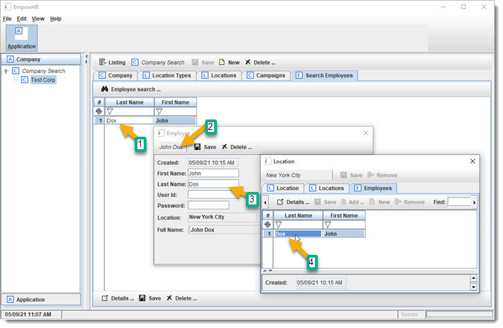
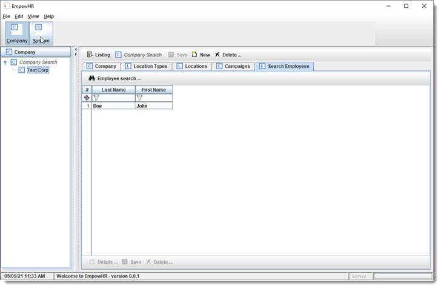

A Search Link is used to add a search from one object to another, by using the property path (locations.employees) that connects them. The search logic will know to search for Employees using this path by using a Filter.
 ReGen & Run: and bring up your Company (using Company Search), and then use the "Search Employees" tab to find John
Doe.
ReGen & Run: and bring up your Company (using Company Search), and then use the "Search Employees" tab to find John
Doe.
There are a few things to notice in the UI, and how it directly works as Modeled.
From the search for John Doe, from the Company, you can popup Employee using the "Details ..." button. This shows the Company.Employees relationship that is being used.

From there you can click on the Location "Details ..." button, and then see John Doe in the "Employees" tab.
The UI navigation follows the Model's Objects & Links. The Application is treating this as an Object Graph, which means the Objects are not just a copy of data from a record in the database, but kept in sync and distributed across systems.
Changing "John Doe" to "John Dox" from the Location's Employee table shows how the "other" John Doe is also changed. This is because the program and Object Graph are smart enough to be using the same instance. Any other part of the Application (and other servers) that have Employee John Doe (id=1) will use the same object and not create
a duplicate.

The Company Employee Search is helpful, but an Admin would want to search all Employees. Let us create a full system Employee search, and update the UI with a new title bar button for searching. We do this from the Model / App UI tab. We are first going to change the UI hierarchy so that it will have another layer/level.
The UI generator looks at the "depth" of the UI tree to determine how to build the navigation layout. The top level is for the main toolbar, the next level is the side bars, and additional levels will allow expanding the side levels.
Click on the new button (bottom left) to create a new node and then drag-n-drop it to under the Application (root node). Name this node "Company" and then drag the other "Company" node under it.
Create another new node, and name it "System" and drag/move it to Application. Click on the new node and name it "System" for now. Drag node "Application" and drop on
"System" node.

ReGen & Run: make sure it is still working :)

 CheckPoint #3 was created. See instructions above on where to copy and rename the
files.
CheckPoint #3 was created. See instructions above on where to copy and rename the
files.
From the "Model Editor", "App UI" tab, create a main toolbar Search button.
Create a new node, naming it "Search", and place it under Application.

Add a Search node and make it a child under Search.
Now, use the add button (bottom, see arrow) to add all the following:

It will look like the following:

We might not want Company set up as "List All", but it is good for now.